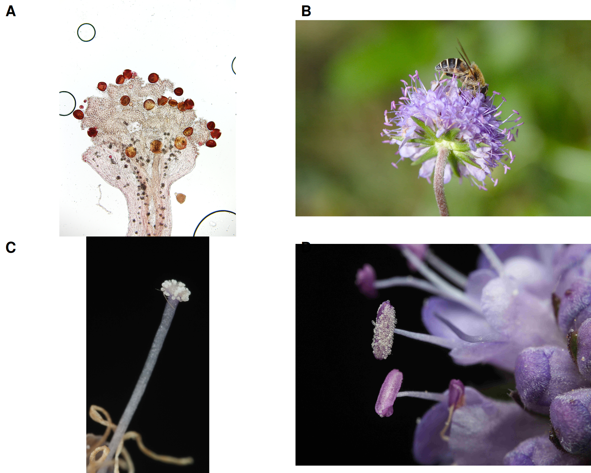
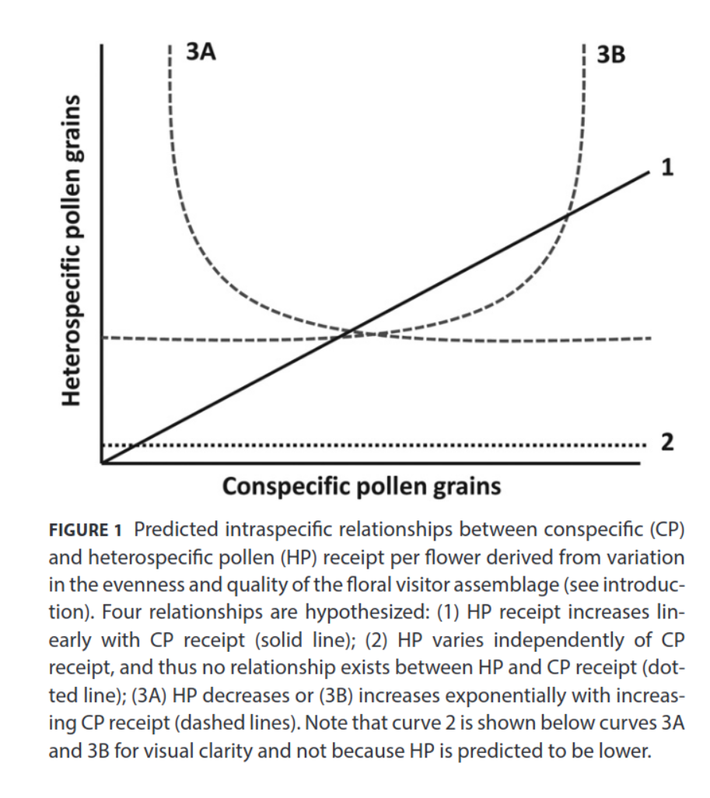
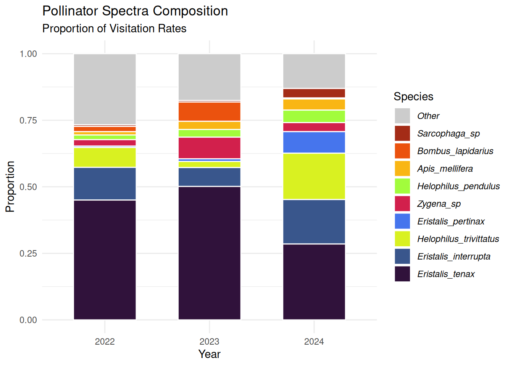
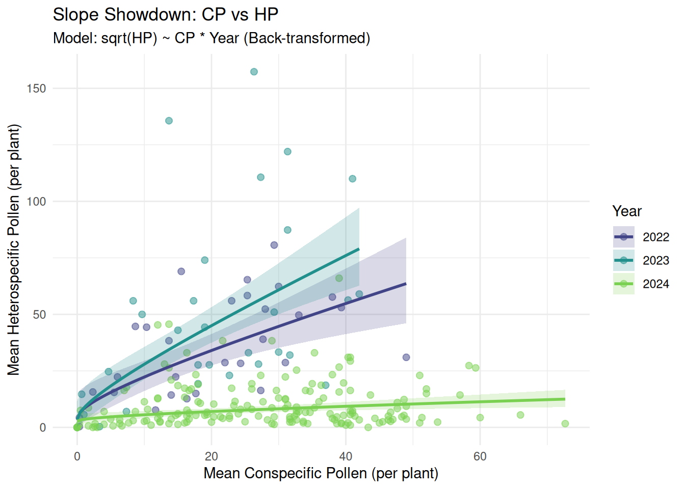
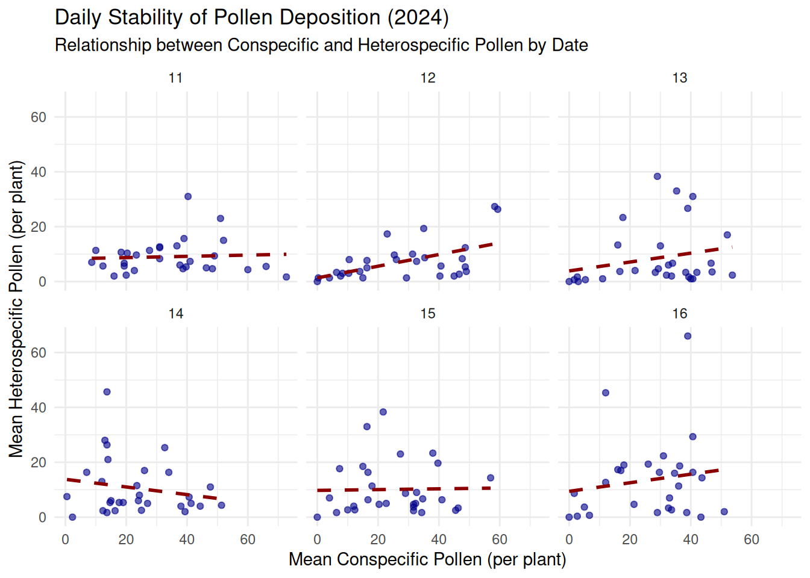
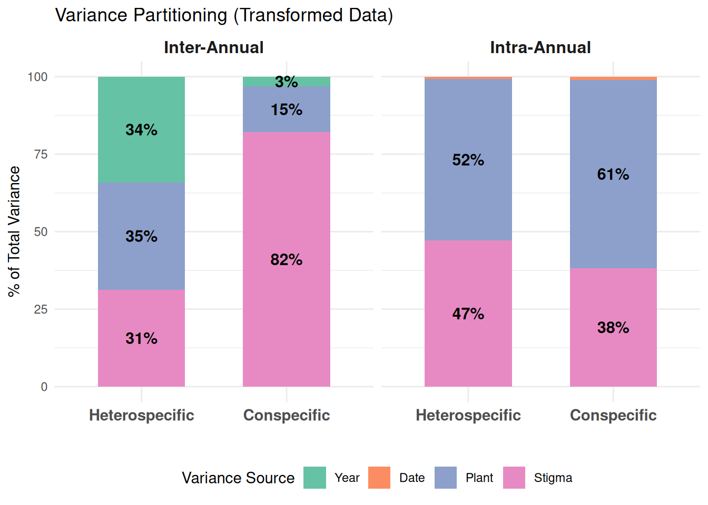
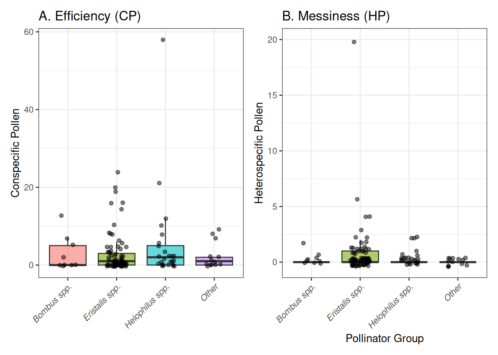
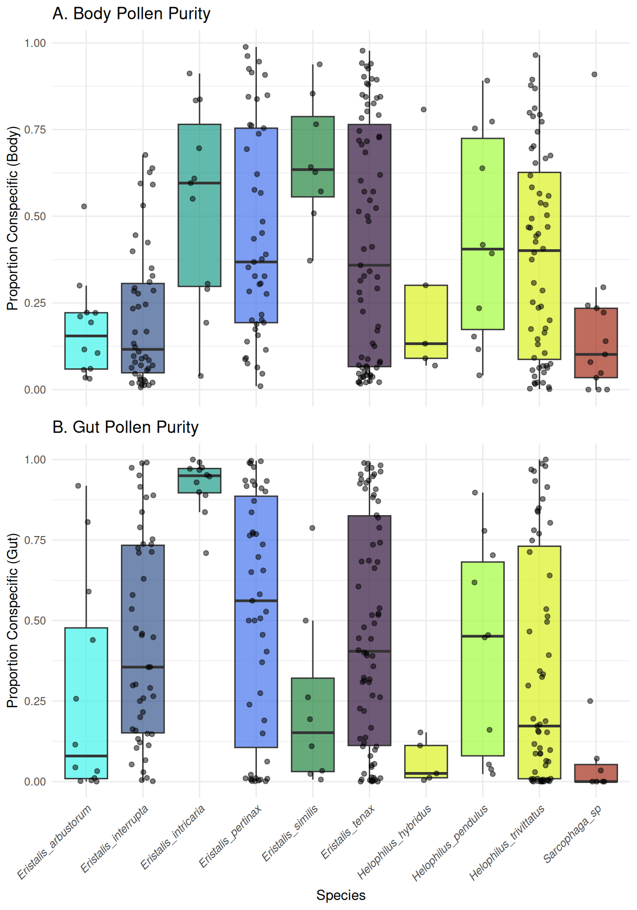
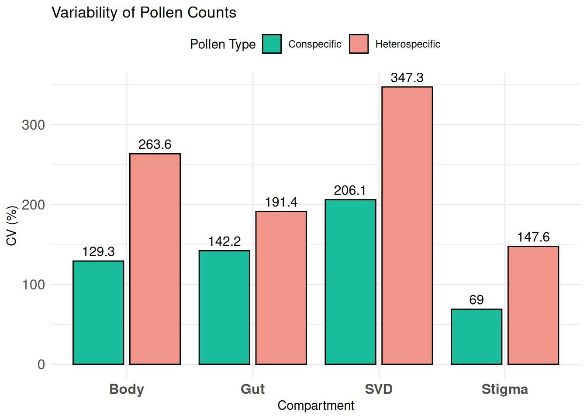
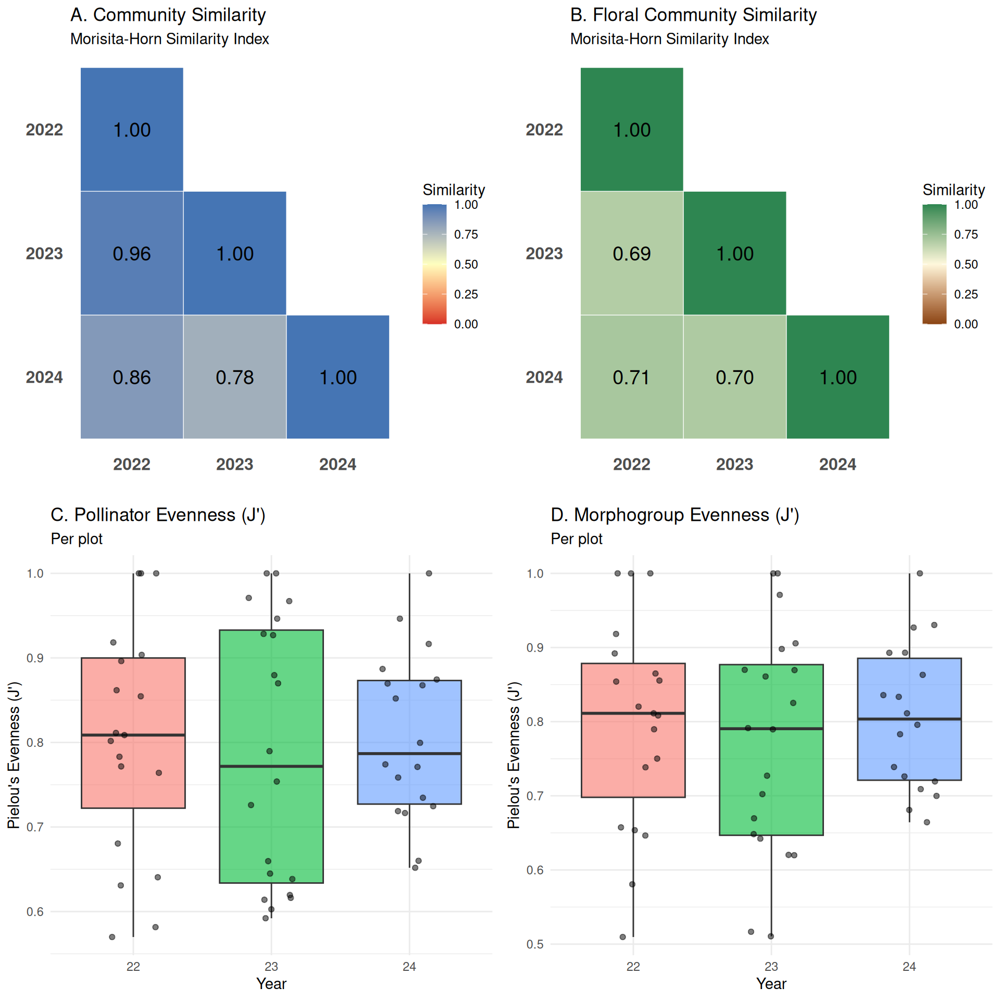

Linking Pollen Deposition Dynamics to Plant-Pollinator Network Structure:
Case study on Succisa pratensis
The Conceptual Framework
Arceo-Gómez et al. (2016) argue that intraspecific variation in pollen receipt is not random. By plotting HP against CP for individual flowers, two distinct patterns typically emerge. These patterns act as a signature of the pollinator community structure.
Scenario A: The “Generalist” Assemblage (Type 1)
If the pollinator assemblage is even (many generalists contributing similarly), we expect Type 1 dynamics. These visitors carry mixed loads; therefore, as they deposit more CP, they inevitably deposit more HP.
Pattern: Linear positive relationship.
Ecological Driver: High pollinator evenness; generalized interactions.
Scenario B: The “Specialist/Uneven” Assemblage (Type 3)
If the assemblage is uneven (dominated by a few high-quality specialists and some “messy” low-quality generalists), we expect Type 3 dynamics. High-quality pollinators deposit pure CP (high CP, low HP), while incidental visitors deposit mostly HP (low CP, high HP).
Pattern: Exponential decrease (or “L” shape).
Ecological Driver: Low pollinator evenness; high variation in pollinator quality.

Abstract
Introduction
In plant-pollinator communities, plants often share pollinators with other species (Lázaro et al., 2009), leading to deposition of pollen from other species (Heterospecific Pollen) on the stigmas (Morales and Traveset, 2008). This is a common phenomenon in nature with significant implications for plant reproduction and evolution. Based on previous studies (Arceo-Gómez et al., 2016), it is expected that the network structure (particularly pollinator evenness) may drive the pattern of conspecific and heterospecific pollen deposition on stigmas. However, the relationship between deposited pollen, pollinator transfer capability and network structure is not well understood.
Pollen deposition dynamics Pollinators visit flower to feed on nectar and pollen. Pollen is then deposited on the stigma of the same flower or another flower of the same plant (conspecific pollen) or another plant (heterospecific pollen). Pollen load is the amount of pollen a pollinator carries on its body.
Pollen load and pollen feeding
“Pollinator quality, in particular, is likely a complex trait that results from not only inconstancy but also pollinator grooming (Thomson, 1986; Holmquist et al., 2012), pollen carryover (Thomson and Plowright, 1980), and pollen loss during transport (Wilcock and Neiland, 2002). Thus, pollinator quality may be difficult to capture with only information on the visitor functional groups defined herein.” (Arceo-Gómez et al., 2016)
The effect of the network structure to the pollen deposition dynamics
- how may the pollen deposition dynamics be affected by the network structure
In their study Arceo-Gómez et al. (2016) found that the network structure (pollinator evenness) may drive the pattern of conspecific and heterospecific pollen deposition on stigmas.
This study aims to investigate interannual variation in pollen deposition patterns on Succisa pratensis stigmas, determine if the composition of pollinator spectra of Succisa pratensis functionally constrains the plant to high heterospecific pollen (HP) receipt, and whether pollinator pollen body load and content of pollinator intestines explain the persistence of this pattern across years. We structure our analysis around three specific objectives:
Determine if the relationship between Conspecific (CP) and Heterospecific (HP) pollen deposition on Succisa stigmas follows a linear (generalist) or exponential (specialist-shielded) trajectory, and assess variability across years, days and plant individuals.
Link the stigmatic deposition pattern to the “pollen transport quality” of the dominant visitors (e.g., Eristalis spp.). We hypothesize that the “Linear” pattern is driven by dominant visitors being “messy vectors,” carrying large conspecific loads but also significant heterospecific loads.
Assess whether the network evenness (the diversity of partners) correlates with the intensity of heterospecific pollen deposition. Following Arceo-Gómez et al. (2016), we test if high evenness drives Type 1 curves, even when absolute pollen pressure varies.
To do so, we employ data on pollen load and pollen feeding of pollinators, pollen deposition on stigmas, and network evenness, collected in 2022-2024 within a diverse plant-pollinator community with Succisa pratensis Moench (Caprifoliaceae) as the focal species. In our previous studies, we identified that Succisa pratensis is visited by a diverse community of pollinators, dominated by hoverflies of genus Eristalis, which may be considered as generalistic pollinators carrying both conspecific and heterospecific pollen(Štenc et al., 2025). Based on our previous studies, we expect high variation in pollen load and visitation rate of pollinators (Freudenfeld et al., 2025), leading to high variation in pollen deposition on stigmas.
Methods
Study system
Our observations were conducted in a seminatural grassland community with a high abundance of flowering plants (especially Succisa pratensis) and diverse pollinator community, dominated by hoverflies. The study site “K Handrkovu” is located near the village of Vernýřov, Central Bohemia, Czech Republic (N 49.8466; E 15.1498). The study site can be classified as a mosaic of moist to mesophilic and eutrophic to mesotrophic grasslands with more than 50 entomogamous plant species flowering in late summer every year (Janovskỳ et al., 2013). The fieldwork was conducted in 2022-2024 during the peak of Succisa pratensis flowering activity (XXth-XXth August, XXh-XXth August and XXth-XXth August, respectively).
Succisa pratensis, our focal plant species, is frequently visited by a wide spectrum of pollinators, especially hoverflies (see Figure 1), feeding on both pollen and nectar on it. In addition, Succisa pratensis has a relatively large and stable population at our study site. Important traits related to pollination also include distinctive open inflorescences available to most pollinators, protandry preventing self-pollination (Bartoš et al., 2020) and pollen releasing in the morning hours (Štenc et al., 2023).
We focused on the common hoverflies species with stable populations with a sufficient numbers of males and females adults occurring at the study site and frequently visiting Succisa pratensis. The most common visitors are hoverfly genera Eristalis (E. arbustorum, E. interruptus, E. intricaria, E. pertinax, E. similis and E. tenax) and Helophilus (H. pendulus and H. trivittatus) and meatfly genera Sarcophaga.
Pollen load and pollen feeding
Foraging hoverflies visiting Succisa inflorescence were caught with entomological net and killed immediately after capture. We swabbed pollen grains from one half (randomly selecting left or right) of each pollinator’s body with a small block of fuchsin jelly as in Beattie (1971). We stored captured pollinators in the 70% ethanol. On the same day, we produced semi-permanent samples by melting fuchsin jelly with a heating pad on a microscope slide, covering and sealing with nail polish. Later, we counted and determined all pollen grains using a light microscope. We sorted pollen into conspecific Succisa pollen and heterospecific pollen of other plant species.
To find out how much and what types of pollen grains were consumed by hoverflies we dissected the guts of captured and killed individuals stored in 70% ethanol using tweezers and sharp scissors under a stereomicroscope. We put separated intestines into small closable tubes with 5 µl of 70% ethanol. Shortly afterwards, we added 50 µl of 10% KOH into the samples and moved it to the warming bath at a temperature of 70° C for 3 hours. After cooling down, we vortexed the samples for 30 seconds to be homogenized and placed 5 µl of the solution on the microscope slides. We let the samples dry on a heating pad and we added 13 µl of 8% vinegar to neutralize KOH. After further drying, we added 5 µl of dye (safranin, water and glycerol), covered the samples with a coverslip and sealed with nail polish to produce semi-permanent samples.
Single visit deposition
To prevent pollinators access to flowers, we bagged selected inflorences into a tulle bag before the plants have entered the male phase and opened the anthers. When the plant entered the female phase with receptive stigmas, we removed the bag and collected two control stigmas into a tube with 70% ethanol. We watched the inflorescence for thirty minutes and recorded every pollinator that visited it. The pollinators were allowed to visit only one flower within the inflorescence, the stigma of which we collected into a tube with 70% ethanol. If the pollinator visited multiple flowers, we collected only the first visited stigma and removed other from the plant.
Pollen deposited on stigmas
We put collected stigmas on the slide and let the ethanol evaporate on the heating pad. After that we added 1 µl of 10% KOH, let the samples dry, added 3 µl of 3% hydrogen peroxide, let the samples dry again and we added 13 µl of 8% vinegar to neutralize KOH. After further drying we added 5 µl of dye (safranin, water and glycerol), covered the samples with a coverslip, applied gentle, even pressure on the cover glass to squash the stigma and sealed with nail polish to produce semi-permanent samples.
Plant-pollinator interactions and plant abundace
Following Janovský et al. (2013) we collected data on pollinator visitation activity. We used same permanent plots as in the flowering plant abundance to record all interactions of flower-visiting pollinators with flowering Succisa pratensis and other plant species in the surrounding of S. pratensis. All flowers within the plot were checked only one time to avoid pseudo-replication and all interactions occurring at the moment of the survey were recorded, lasting up to five minutes. Each plot was recorded at least twenty times during the activity period of pollinators (7:00 - 19:00) at the peak of flowering (mid-August) each year. We recorded only the pollinators touching the reproductive organs of the visited plant and each individual pollinator only once. Finally, we counted standardized interaction rates (total number of interactions per sampling visit) for pollinators visiting S. pratensis from 2022 to 2024 and compared the distribution of interaction rates for the specific group of pollinators visiting S. pratensis and the same pollinators on all other plant species.
Thanks to long-term research on flowering plants and their interactions with pollinators, we obtained information on the abundances of individual plants at the study site and it’s changes over time (see Janovský et al., 2013). We used 4 × 4 m2 permanent plots each placed in the center of each grid point of a 20 × 20 m2 grid covering a total area of 300 × 300 m2 of the study site. To determine the floral neighborhood of Succisa pratensis from 2022 to 2024, we counted distribution of plant abundance for individual plots where S. pratensis was present. We counted conspecific abundance of the focal species and heterospecific co-flowering abundance index, which is the cumulative abundance of all other co-flowering plant species in the plot.
Statistical Analysis
All statistical analyses were performed in R (v4.x). Count data for heterospecific (HP) and conspecific (CP) pollen were square-root transformed prior to parametric modeling. Diagnostic plots (Supplementary Material Figs S1–S2) confirmed that this transformation stabilized variance and satisfied homoscedasticity assumptions more effectively than raw or log-transformed data.
Variance Component Analysis
To quantify the hierarchical scale of stochasticity in pollen deposition, we fitted Linear Mixed Models (LMMs) using the lme4 package. We partitioned the total variance of sqrt-transformed pollen counts into Year (random effect), Plant (nested within Year), and Stigma (Residual variation). For the high-resolution 2024 dataset, we further partitioned variance into Sampling Date, Plant (nested within Date), and Stigma. While statistical inference focused on transformed counts, we also visualized the proportion of heterospecific pollen (HP / (HP + CP)) to assess deposition purity.
Pollen Accumulation Dynamics
To test if the rate of heterospecific pollen accumulation differed between years, we fitted a Linear Model (lm) of the form: sqrt(HP) ~ CP * Year. We used the emtrends function (from the emmeans package) to estimate and compare the slopes (\(\beta\)) of the HP-CP relationship for each year, interpreted as the “pollution efficiency” of the community.
Network Stability
We assessed the temporal stability of the pollinator community composition using the Morisita-Horn similarity index, calculated with the vegan package. This metric was selected for its robustness to differences in sample size and species richness.
Single Visit Deposition
To assess the efficiency and ‘messiness’ of major pollinator groups, we conducted a Single Visit Deposition (SVD) experiment. We presented unvisited (bagged) Succisa stigmas to foraging insects, allowed a single visit, and subsequently counted conspecific (CP) and heterospecific (HP) pollen loads. We classified visitors into broad morphogroups (e.g., Eristalis spp., Bombus spp.) and compared their CP and HP deposition using a Kruskal-Wallis test, followed by Dunn’s post-hoc test (Benjamini-Hochberg correction), as pollen counts were zero-inflated and non-normal.
Macro-Ecological Context
To contextualize the deposition results, we calculated annual network specialization (\(H_2'\)) using the bipartite package and estimated community floral resource abundance by summing plant counts in the permanent plots.
Results
Succisa pratensis Distribution
The presence of Succisa pratensis in the study plots across the surveyed years (2022-2024) is visualized below.
Code
# --- PART A: MAP ---
# 1. Prepare Presence Data
succisa_presence <- plant_abundance %>%
filter(year %in% c(22, 23, 24)) %>%
select(year, plot_id, Suc_pra) %>%
filter(Suc_pra > 0) %>%
mutate(
year_label = paste0("20", year),
plot_id_join = as.character(as.integer(plot_id))
)
# 2. Prepare Spatial Data
plots_sf <- hanpolnet_plots %>%
mutate(
plot_id_join = ifelse(grepl("^[0-9]+$", plot_id),
as.character(as.integer(plot_id)),
plot_id
)
)
# 3. Join
map_data <- succisa_presence %>%
inner_join(plots_sf, by = "plot_id_join") %>%
st_as_sf()
# 4. Create Map Plot Object
p_map <- ggplot() +
geom_sf(data = plots_sf, color = "grey85", size = 1.5, shape = 1) +
geom_sf(data = map_data, aes(color = year_label), size = 2) +
facet_wrap(~year_label) +
scale_color_viridis_d(begin = 0.2, end = 0.8, option = "D") +
theme_minimal() +
labs(
title = "Succisa pratensis Presence",
subtitle = "Plots with recorded abundance > 0",
color = "Year"
) +
theme(
axis.text = element_blank(),
axis.title = element_blank(),
panel.grid = element_blank(),
legend.position = "right"
)
# --- PART B: ABUNDANCE ---
# 1. Summarize
abundance_summary <- plant_abundance %>%
filter(year %in% c(22, 23, 24)) %>%
group_by(year) %>%
summarise(total_abundance = sum(Suc_pra, na.rm = TRUE)) %>%
mutate(year_label = paste0("20", year))
# 2. Create Barplot Object
p_abundance <- ggplot(abundance_summary, aes(x = year_label, y = total_abundance, fill = year_label)) +
geom_col(alpha = 0.8, width = 0.6) +
labs(
title = "Total Succisa pratensis Abundance",
x = "Year",
y = "Total Abundance\n (flowering stalks)"
) +
scale_fill_viridis_d(begin = 0.2, end = 0.8, option = "D") +
theme_minimal() +
theme(legend.position = "none")
# Sum rates per plot to get total visitation intensity per plot
visitation_per_plot <- interaction_data_Succisa_22_24 %>%
group_by(year, plot_id) %>%
summarise(total_rate = sum(rate, na.rm = TRUE), .groups = "drop") %>%
filter(!is.na(year)) %>%
mutate(year = factor(paste0("20", year)))
# Plot
p_visitation <- ggplot(visitation_per_plot, aes(x = year, y = total_rate, fill = year)) +
geom_boxplot(alpha = 0.6, outlier.shape = NA) +
geom_jitter(width = 0.2, alpha = 0.5) +
labs(
title = "Visitation Rates per Plot",
x = "Year",
y = "Standardized Visitation Rate\n (interactions / visit)"
) +
scale_fill_viridis_d(begin = 0.3, end = 0.7) +
theme_minimal() +
theme(legend.position = "none")
# --- COMBINE ---
ggarrange(p_map, p_abundance, p_visitation,
ncol = 1,
labels = c("A", "B", "C"),
heights = c(1.5, 2, 2)
) # Give more height to the map
Pollinator Spectra Comparison (2022-2024)
Comparisons of the proportional representation of different pollinator species visiting Succisa pratensis across the three years reveal the stability of the pollinator community composition.
Code
# 1. Aggregation
# Calculate total visitation rate per species per year
species_composition <- interaction_data_Succisa_22_24 %>%
filter(!is.na(year)) %>% # Remove NA years
group_by(year, pollinator_id) %>%
summarise(total_rate = sum(rate, na.rm = TRUE), .groups = "drop") %>%
group_by(year) %>%
mutate(
yearly_total = sum(total_rate),
proportion = total_rate / yearly_total,
year_label = paste0("20", year)
)
# 2. Lump Rare Species
# Select top N most abundant species across all years to show individually
top_n_species <- 9
top_species_list <- species_composition %>%
group_by(pollinator_id) %>%
summarise(grand_total = sum(total_rate)) %>%
arrange(desc(grand_total)) %>%
slice_head(n = top_n_species) %>%
pull(pollinator_id)
# Lump others
species_composition_grouped <- species_composition %>%
mutate(
species_label = ifelse(pollinator_id %in% top_species_list,
pollinator_id,
"Other"
)
) %>%
group_by(year_label, species_label) %>%
summarise(proportion = sum(proportion), .groups = "drop")
# Reorder species for plotting (Other at bottom or top, others by abundance)
# We make "Other" the first level so it appears at one end of the stack
species_composition_grouped$species_label <- factor(
species_composition_grouped$species_label,
levels = c("Other", rev(top_species_list)) # Stack order
)
# Define Consistent Colors
pollinator_colors <- c(
"Eristalis_tenax" = "#30123B", # Dark Purple
"Eristalis_pertinax" = "#4675ED", # Blue
"Eristalis_interrupta" = "#39568C", # Dark Blue
"Eristalis_arbustorum" = "#42F4EB", # Cyan-ish
"Eristalis_intricaria" = "#1E9C89", # Teal
"Eristalis_similis" = "#248641", # Green
"Eristalis_sp" = "#248641", # Green (fallback)
"Helophilus_pendulus" = "#A2FC3C", # Light Green
"Helophilus_trivittatus" = "#D9F121", # Yellow-Green
"Helophilus_hybridus" = "#D9F121", # Yellow-Green
"Myathropa_florea" = "#F9B614", # Yellow/Orange
"Apis_mellifera" = "#F9B614", # Orange
"Bombus_lapidarius" = "#EB520E", # Red-Orange
"Sarcophaga_sp" = "#A42C17", # Dark Red
"Zygena_sp" = "#D2204C", # Red/Pink
"Sericomyia" = "#D2204C", # Red/Pink
"Tachinidae" = "grey50",
"Other" = "grey80"
)
# 3. Visualization
ggplot(species_composition_grouped, aes(x = year_label, y = proportion, fill = species_label)) +
geom_col(width = 0.6, color = "white", size = 0.2) +
scale_fill_manual(values = pollinator_colors, name = "Species") +
labs(
title = "Pollinator Spectra Composition",
subtitle = "Proportion of Visitation Rates",
x = "Year",
y = "Proportion"
) +
theme_minimal() +
theme(
legend.position = "right",
legend.text = element_text(face = "italic")
)
Pollinator Visitation Rates
We also examined the changes in visitation intensity to Succisa pratensis across the three years.
Code
test_curve_shape <- function(year_data, year_label) {
# 0. Data Aggregation (Mean per Plant)
# Using the 'plant_id' we created earlier
agg_data <- year_data %>%
group_by(plant_id) %>%
summarise(
mean_HP = mean(heterospecific_pollen, na.rm = TRUE),
mean_CP = mean(conspecific_pollen, na.rm = TRUE),
.groups = "drop"
)
# 1. Fit Linear Model (Type 1) - Simple LM on Means
fit_linear <- lm(mean_HP ~ mean_CP, data = agg_data)
# 2. Fit Exponential Model (Type 3) - Simple NLS on Means
fit_exp <- tryCatch(
{
nls(mean_HP ~ a * exp(b * mean_CP),
data = agg_data,
start = list(a = max(agg_data$mean_HP, na.rm = TRUE), b = -0.01)
)
},
error = function(e) {
# Fallback start values
tryCatch(
{
nls(mean_HP ~ a * exp(b * mean_CP),
data = agg_data,
start = list(a = mean(agg_data$mean_HP, na.rm = TRUE), b = -0.001)
)
},
error = function(e2) NULL
)
}
)
# 3. Compare AIC
aic_lin <- AIC(fit_linear)
aic_exp <- if (!is.null(fit_exp)) AIC(fit_exp) else NA
return(data.frame(
Year = year_label,
Linear_AIC = round(aic_lin, 2),
Exp_AIC = if (is.na(aic_exp)) NA else round(aic_exp, 2),
Best_Fit = case_when(
is.na(aic_exp) ~ "Linear (Type 1) [Exp Failed]",
aic_exp < (aic_lin - 2) ~ "Exponential (Type 3)",
TRUE ~ "Linear (Type 1)"
)
))
}
# Run the test
results_2022 <- test_curve_shape(subset(pollen_deposition, year == 2022), "2022")
results_2023 <- test_curve_shape(subset(pollen_deposition, year == 2023), "2023")
results_2024 <- test_curve_shape(subset(pollen_deposition, year == 2024), "2024")
# Display Results
# Display Results
rbind(results_2022, results_2023, results_2024) %>%
gt() %>%
tab_header(title = "Model Comparison Results") %>%
fmt_number(columns = c(Linear_AIC, Exp_AIC), decimals = 2) %>%
cols_label(
Year = "Year",
Linear_AIC = "Linear AIC",
Exp_AIC = "Exponential AIC",
Best_Fit = "Best Fit Model"
) %>%
tab_style(
style = cell_text(weight = "bold"),
locations = cells_column_labels()
) %>%
tab_options(
column_labels.background.color = "#F0F0F0",
column_labels.font.weight = "bold",
table.border.top.color = "black",
table.border.top.width = px(2),
table.border.bottom.color = "black",
table.border.bottom.width = px(2),
table_body.hlines.color = "#E5E5E5",
data_row.padding = px(6)
) %>%
tab_style(
style = list(
cell_text(color = "black", weight = "bold")
),
locations = cells_column_labels()
) %>%
opt_align_table_header(align = "left")| Model Comparison Results | |||
|---|---|---|---|
| Year | Linear AIC | Exponential AIC | Best Fit Model |
| 2022 | 255.68 | 258.04 | Linear (Type 1) |
| 2023 | 306.89 | 307.97 | Linear (Type 1) |
| 2024 | 1,333.43 | 1,333.80 | Linear (Type 1) |
Slope Showdown: Analysis of Aggregated Data
To address potential pseudoreplication (multiple stigmas per plant) and heteroscedasticity (variance increasing with mean), we aggregated pollen counts to the plant level and modeled the square root of Heterospecific Pollen (HP). We then compared the slopes of the HP vs. CP relationship between years. While statistical inference was performed on square-root transformed data to satisfy model assumptions, figures presented below show back-transformed estimates (curves) or raw data points for biological interpretability.
Code
# 1. Data Aggregation
aggregated_data <- pollen_deposition %>%
group_by(year, plant_id) %>%
summarise(
mean_HP = mean(heterospecific_pollen, na.rm = TRUE),
mean_CP = mean(conspecific_pollen, na.rm = TRUE),
.groups = "drop"
) %>%
filter(is.finite(mean_HP) & is.finite(mean_CP)) %>%
filter(!is.na(year)) %>%
mutate(Year = as.factor(year))
# 2. Model Fitting (Square Root Transformation)
# sqrt(mean_HP) ~ mean_CP * Year
fit_sqrt <- lm(sqrt(mean_HP) ~sqrt(mean_CP) * Year, data = aggregated_data)
# 3. Model Results
# Type III ANOVA (if using car::Anova) or standard anova
# Type III ANOVA (if using car::Anova) or standard anova
anova_res <- anova(fit_sqrt)
anova_res %>%
as.data.frame() %>%
tibble::rownames_to_column(var = "Term") %>%
gt() %>%
tab_header(title = "Analysis of Variance: sqrt(HP) ~ CP * Year") %>%
fmt_number(columns = c("Sum Sq", "Mean Sq", "F value", "Pr(>F)"), decimals = 3) %>%
sub_small_vals(columns = "Pr(>F)", threshold = 0.001) %>%
fmt_missing(columns = everything(), missing_text = "") %>%
cols_label(Term = "Source") %>%
tab_style(
style = cell_text(weight = "bold"),
locations = cells_body(
rows = `Pr(>F)` < 0.05
)
) %>%
tab_style(
style = cell_text(weight = "bold"),
locations = cells_column_labels()
) %>%
tab_options(
column_labels.background.color = "#F0F0F0",
column_labels.font.weight = "bold",
table.border.top.color = "black",
table.border.top.width = px(2),
table.border.bottom.color = "black",
table.border.bottom.width = px(2),
table_body.hlines.color = "#E5E5E5",
data_row.padding = px(6)
) %>%
tab_style(
style = list(
cell_text(color = "black", weight = "bold")
),
locations = cells_column_labels()
) %>%
opt_align_table_header(align = "left")| Analysis of Variance: sqrt(HP) ~ CP * Year | |||||
|---|---|---|---|---|---|
| Source | Df | Sum Sq | Mean Sq | F value | Pr(>F) |
| sqrt(mean_CP) | 1 | 39.035 | 39.035 | 15.038 | <0.001 |
| Year | 2 | 552.940 | 276.470 | 106.510 | <0.001 |
| sqrt(mean_CP):Year | 2 | 72.937 | 36.468 | 14.049 | <0.001 |
| Residuals | 231 | 599.614 | 2.596 | ||
Relationship between Conspecific and Heterospecific pollen (Plant Means). Curves represent back-transformed fits from the sqrt-scale model.
Code
# 4. Slope Comparisons (on Sqrt Scale)
slopes_sqrt <- emtrends(fit_sqrt, pairwise ~ Year, var = "mean_CP")
# Format Slope Estimates
# Format Slope Estimates
slope_est <- as.data.frame(slopes_sqrt$emtrends) %>%
select(Year, Slope = mean_CP.trend, SE, df, lower.CL, upper.CL)
slope_est %>%
gt() %>%
tab_header(title = "Slope Estimates (Sqrt Scale)") %>%
fmt_number(columns = c(Slope, SE, lower.CL, upper.CL), decimals = 4) %>%
cols_label(
lower.CL = "Lower CI",
upper.CL = "Upper CI"
) %>%
tab_style(
style = cell_text(weight = "bold"),
locations = cells_column_labels()
) %>%
tab_options(
column_labels.background.color = "#F0F0F0",
column_labels.font.weight = "bold",
table.border.top.color = "black",
table.border.top.width = px(2),
table.border.bottom.color = "black",
table.border.bottom.width = px(2),
table_body.hlines.color = "#E5E5E5",
data_row.padding = px(6)
) %>%
tab_style(
style = list(
cell_text(color = "black", weight = "bold")
),
locations = cells_column_labels()
) %>%
opt_align_table_header(align = "left")| Slope Estimates (Sqrt Scale) | |||||
|---|---|---|---|---|---|
| Year | Slope | SE | df | Lower CI | Upper CI |
| 2022 | 0.0834 | 0.0186 | 231 | 0.0469 | 0.1200 |
| 2023 | 0.1068 | 0.0171 | 231 | 0.0731 | 0.1405 |
| 2024 | 0.0216 | 0.0068 | 231 | 0.0082 | 0.0349 |
Relationship between Conspecific and Heterospecific pollen (Plant Means). Curves represent back-transformed fits from the sqrt-scale model.
Code
# Format Pairwise Comparisons
# Format Pairwise Comparisons
slope_contrasts <- as.data.frame(slopes_sqrt$contrasts) %>%
select(contrast, estimate, SE, df, t.ratio, p.value)
slope_contrasts %>%
gt() %>%
tab_header(title = "Pairwise Slope Comparisons") %>%
fmt_number(columns = c(estimate, SE, t.ratio, p.value), decimals = 4) %>%
sub_small_vals(columns = p.value, threshold = 0.001) %>%
tab_style(
style = cell_text(weight = "bold"),
locations = cells_body(
rows = p.value < 0.05
)
) %>%
tab_style(
style = cell_text(weight = "bold"),
locations = cells_column_labels()
) %>%
tab_options(
column_labels.background.color = "#F0F0F0",
column_labels.font.weight = "bold",
table.border.top.color = "black",
table.border.top.width = px(2),
table.border.bottom.color = "black",
table.border.bottom.width = px(2),
table_body.hlines.color = "#E5E5E5",
data_row.padding = px(6)
) %>%
tab_style(
style = list(
cell_text(color = "black", weight = "bold")
),
locations = cells_column_labels()
) %>%
opt_align_table_header(align = "left")| Pairwise Slope Comparisons | |||||
|---|---|---|---|---|---|
| contrast | estimate | SE | df | t.ratio | p.value |
| Year2022 - Year2023 | −0.0234 | 0.0252 | 231 | −0.9265 | 0.6241 |
| Year2022 - Year2024 | 0.0619 | 0.0197 | 231 | 3.1329 | 0.0055 |
| Year2023 - Year2024 | 0.0852 | 0.0184 | 231 | 4.6366 | <0.001 |
Relationship between Conspecific and Heterospecific pollen (Plant Means). Curves represent back-transformed fits from the sqrt-scale model.
Code
# 5. Visualization (Back-Transformed)
# Create prediction grid
# Range of CP for each year
pred_grid <- aggregated_data %>%
group_by(Year) %>%
do({
seq_cp <- seq(min(.$mean_CP), max(.$mean_CP), length.out = 100)
data.frame(mean_CP = seq_cp)
}) %>%
ungroup()
# Predict on Sqrt Scale with Confidence Intervals
preds <- predict(fit_sqrt, newdata = pred_grid, interval = "confidence")
# Bind and Back-Transform (Square)
pred_data <- cbind(pred_grid, preds) %>%
mutate(
mean_HP = fit^2, # Back-transform fit
lwr_raw = lwr^2, # Back-transform lower CI
upr_raw = upr^2 # Back-transform upper CI
)
# Plot
ggplot(aggregated_data, aes(x = mean_CP, y = mean_HP, color = Year, fill = Year)) +
# Observed Points
geom_point(alpha = 0.5, size = 2) +
# Confidence Ribbons (Back-transformed)
geom_ribbon(data = pred_data, aes(ymin = lwr_raw, ymax = upr_raw), alpha = 0.2, color = NA) +
# Fitted Lines (Back-transformed curves)
geom_line(data = pred_data, size = 1) +
labs(
title = "Slope Showdown: CP vs HP",
subtitle = "Model: sqrt(HP) ~ CP * Year (Back-transformed)",
x = "Mean Conspecific Pollen (per plant)",
y = "Mean Heterospecific Pollen (per plant)",
color = "Year",
fill = "Year"
) +
scale_color_viridis_d(begin = 0.2, end = 0.8, option = "D") +
scale_fill_viridis_d(begin = 0.2, end = 0.8, option = "D") +
theme_minimal()
Daily Stability Test (2024)
To determine if the relationship between Conspecific and Heterospecific pollen deposition changes over the course of the flowering season, we analyzed the 2024 data. We tested the interaction between Conspecific Pollen and Day (conspecific_pollen * day).
Code
# 1. Data Prep
# Filter for 2024 and aggregate by plant_id (which is day-specific)
agg_data_2024 <- pollen_deposition %>%
filter(year == 2024) %>%
group_by(plant_id, day) %>%
summarise(
mean_HP = mean(heterospecific_pollen, na.rm = TRUE),
mean_CP = mean(conspecific_pollen, na.rm = TRUE),
.groups = "drop"
)
# 2. Model Fitting
# Test if the slope (CP -> HP) varies by day (Interaction term)
fit_daily <- lm(mean_HP ~ mean_CP * as.factor(day), data = agg_data_2024)
# 3. Statistical Test
# ANOVA to check significance of the interaction term
anova_results <- anova(fit_daily)
print(anova_results)Analysis of Variance Table
Response: mean_HP
Df Sum Sq Mean Sq F value Pr(>F)
mean_CP 1 220.9 220.85 2.1880 0.1410
as.factor(day) 5 750.7 150.14 1.4874 0.1965
mean_CP:as.factor(day) 5 551.4 110.28 1.0926 0.3664
Residuals 166 16756.1 100.94 Code
# 4. Visualization
ggplot(agg_data_2024, aes(x = mean_CP, y = mean_HP)) +
geom_point(alpha = 0.6, color = "darkblue") +
geom_smooth(method = "lm", se = FALSE, color = "darkred", linetype = "dashed") +
facet_wrap(~day) +
labs(
title = "Daily Stability of Pollen Deposition (2024)",
subtitle = "Relationship between Conspecific and Heterospecific Pollen by Date",
x = "Mean Conspecific Pollen (per plant)",
y = "Mean Heterospecific Pollen (per plant)"
) +
theme_minimal()
Variance Partitioning: Stability Validation
To address the unbalanced sampling design (single sampling day in 2022/2023 vs. multiple in 2024), we performed a two-part Variance Component Analysis (VCA) to validate the stability of the pollen deposition patterns.
Part 1: Inter-Annual Stability (All Years)
We partitioned variance into Year, Plant (nested in Year), and Stigma (Residual) using the full dataset, ignoring the Date level to avoid confounding in 2022/23.
Part 2: Intra-Annual Stability (2024 Only)
Using only the 2024 data, we explicitly tested the effect of Date (Day-to-Day variation) vs. Plant (nested in Date) vs. Stigma.
Variance Partitioning of Pollen Deposition
To determine the hierarchical scale of variability in heterospecific pollen (HP) receipt, we performed a variance component analysis on square-root transformed HP counts. The majority of the variation in HP deposition occurred at the finest scale—among individual stigmas within plants (Residual variance). In the global analysis across three years, stochastic stigma-level variation explained [XX.X%] of the total variance, while inter-annual fluctuations ('Year') accounted for only [XX.X%] (Table 2).
This pattern of high fine-scale stochasticity was consistent when analyzing the detailed 2024 dataset. Within the 2024 flowering season, daily turnover ('Sampling Date') explained a negligible proportion of the variance ([XX.X%]), while plant identity explained [XX.X%]. The remaining [XX.X%] of variation was attributable to differences between individual stigmas on the same plant (Fig. 4). These results indicate that HP deposition is driven primarily by stochastic, single-visit mechanics rather than by systemic temporal shifts or plant-level traits.Code
# 1. Data Preparation
vca_data <- pollen_deposition %>%
filter(!is.na(heterospecific_pollen) & !is.na(conspecific_pollen)) %>%
mutate(
# Response Variables
sqrt_HP = sqrt(heterospecific_pollen),
sqrt_CP = sqrt(conspecific_pollen),
# Calculate Proportion HP (approximate normality with sqrt)
total = heterospecific_pollen + conspecific_pollen,
prop = ifelse(total > 0, heterospecific_pollen / total, 0),
sqrt_Prop = sqrt(prop),
# Factors
year_fac = as.factor(year),
date_fac = as.factor(paste(year, day, sep = "_")),
plant_id = inflorescence_id # unique within year
)
# 2. General Function for Two-Part VCA
run_twopart_vca <- function(data, variable_col, metric_label) {
# Internal helper to extract variance
extract_lmer_var <- function(model, name) {
vc <- VarCorr(model)
df <- as.data.frame(vc)
# Ensure Residual is included
if (!("Residual" %in% df$grp)) {
sigma_sq <- attr(vc, "sc")^2
df <- rbind(df, data.frame(grp = "Residual", var1 = NA, var2 = NA, vcov = sigma_sq, sdcor = attr(vc, "sc")))
}
# Calculate Percent
total_var <- sum(df$vcov)
df$percent <- (df$vcov / total_var) * 100
df$Part <- name
df$level <- dplyr::case_when(
grepl("inflorescence", df$grp) ~ "Plant",
grepl("plant_id", df$grp) ~ "Plant",
df$grp == "year_fac" ~ "Year",
df$grp == "date_fac" ~ "Date",
df$grp == "Residual" ~ "Stigma",
TRUE ~ "Other"
)
return(df[, c("Part", "level", "vcov", "sdcor", "percent")])
}
# Part 1: Inter-Annual (Global)
f_inter <- as.formula(paste(variable_col, "~ 1 + (1 | year_fac / plant_id)"))
m_inter <- lmer(f_inter, data = data)
res_inter <- extract_lmer_var(m_inter, "Inter-Annual")
# Part 2: Intra-Annual (2024 Only)
data_24 <- filter(data, year == 2024)
# Check if we have date variation in 2024
f_intra <- as.formula(paste(variable_col, "~ 1 + (1 | date_fac / plant_id)"))
m_intra <- lmer(f_intra, data = data_24)
res_intra <- extract_lmer_var(m_intra, "Intra-Annual")
# Combine
combined <- rbind(res_inter, res_intra)
combined$Metric <- metric_label
return(combined)
}
# 3. Run for all 2 metrics (using Sqrt as validated in Supplement)
res_HP <- run_twopart_vca(vca_data, "sqrt_HP", "Heterospecific")
res_CP <- run_twopart_vca(vca_data, "sqrt_CP", "Conspecific")
all_results <- rbind(res_HP, res_CP)
# Define factor levels
all_results$level <- factor(all_results$level, levels = c("Year", "Date", "Plant", "Stigma"))
all_results$Metric <- factor(all_results$Metric, levels = c("Heterospecific", "Conspecific"))
# 4. Visualization (Percent only)
p_var <- ggplot(all_results, aes(x = Metric, y = percent, fill = level)) +
geom_bar(stat = "identity", width = 0.6) +
facet_wrap(~Part) +
scale_fill_brewer(palette = "Set2") +
geom_text(aes(label = ifelse(percent > 1.5, paste0(round(percent, 0), "%"), "")),
position = position_stack(vjust = 0.5),
size = 4,
fontface = "bold",
color = "black"
) +
labs(
title = "Variance Partitioning (Transformed Data)",
y = "% of Total Variance",
x = "",
fill = "Variance Source"
) +
theme_minimal() +
theme(
axis.text.x = element_text(face = "bold", angle = 0, hjust = 0.5, size = 11),
strip.text = element_text(size = 12, face = "bold"),
legend.position = "bottom"
)
print(p_var)
Code
# 5. GENERATE PUBLICATION TABLE (Table 2 for HP)
table_detailed <- all_results %>%
filter(Metric == "Heterospecific") %>%
select(Part, level, vcov, sdcor, percent) %>%
rename(
Analysis = Part,
Source = level,
Variance = vcov,
Std_Dev = sdcor,
Percent_Total = percent
) %>%
mutate(
Variance = round(Variance, 2),
Std_Dev = round(Std_Dev, 2),
Percent_Total = paste0(round(Percent_Total, 1), "%")
) %>%
arrange(Analysis, desc(Source))
# Identify the last row of Inter-Annual analysis for styling
last_inter_row <- max(which(table_detailed$Analysis == "Inter-Annual"))
# Print the table with GT
table_detailed %>%
gt() %>%
tab_header(
title = md("**Table 2**: Variance partitioning of square-root transformed heterospecific pollen deposition"),
subtitle = "Results for Global (Inter-Annual) and 2024 (Intra-Annual) analyses."
) %>%
cols_label(
Analysis = "Analysis Scope",
Source = "Variance Source",
Variance = "Variance Component",
Std_Dev = "SD",
Percent_Total = "% Total"
) %>%
tab_style(
style = cell_text(weight = "bold"),
locations = cells_column_labels()
) %>%
tab_options(
column_labels.background.color = "#F0F0F0",
table.border.top.color = "black",
table.border.top.width = px(2),
table.border.bottom.color = "black",
table.border.bottom.width = px(2),
data_row.padding = px(6)
) %>%
# Add dashed line separating the two analyses
tab_style(
style = cell_borders(
sides = "bottom",
color = "black",
weight = px(1), # Standard solid line
style = "solid"
),
locations = cells_body(
rows = last_inter_row
)
) %>%
opt_align_table_header(align = "left")| Table 2: Variance partitioning of square-root transformed heterospecific pollen deposition | ||||
|---|---|---|---|---|
| Results for Global (Inter-Annual) and 2024 (Intra-Annual) analyses. | ||||
| Analysis Scope | Variance Source | Variance Component | SD | % Total |
| Inter-Annual | Stigma | 3.22 | 1.80 | 31.3% |
| Inter-Annual | Plant | 3.56 | 1.89 | 34.6% |
| Inter-Annual | Year | 3.51 | 1.87 | 34.1% |
| Intra-Annual | Stigma | 1.50 | 1.23 | 47.2% |
| Intra-Annual | Plant | 1.66 | 1.29 | 52.1% |
| Intra-Annual | Date | 0.02 | 0.15 | 0.7% |
Variance Partitioning Results. A) Inter-Annual Stability (All Years). B) Intra-Annual Stability (2024 Only).
Single Visit Efficiency (SVD)
Code
# 2. Data Cleaning & Grouping
SVD_clean <- SVD_Succisa_22_24 %>%
rename(
duration_sec = delka_navstevy,
year = rok,
species = pollinator_species
) %>%
mutate(
# Create Morphogroups
morphogroup = case_when(
grepl("Eristalis", species) ~ "Eristalis spp.",
grepl("Bombus", species) ~ "Bombus spp.",
species == "Apis mellifera" ~ "Apis mellifera",
grepl("Syrphus", species) ~ "Syrphus spp.",
grepl("Helophilus", species) ~ "Helophilus spp.",
TRUE ~ "Other"
)
)
# Filter for groups with sufficient sample size (N > 5) for visualization
group_counts <- SVD_clean %>%
count(morphogroup) %>%
filter(n >= 5)
SVD_final <- SVD_clean %>%
filter(morphogroup %in% group_counts$morphogroup)
# 3. Visualization
# Panel A: Efficiency (CP)
p_eff <- ggplot(SVD_final, aes(x = morphogroup, y = conspecific_pollen, fill = morphogroup)) +
geom_boxplot(alpha = 0.6, outlier.shape = NA) +
geom_jitter(width = 0.2, alpha = 0.5, size = 1.5) +
labs(
title = "A. Efficiency (CP)",
y = "Conspecific Pollen",
x = ""
) +
theme_bw() +
theme(
axis.text.x = element_text(angle = 45, hjust = 1, face = "italic"),
legend.position = "none"
)
# Panel B: Messiness (HP)
p_mess <- ggplot(SVD_final, aes(x = morphogroup, y = heterospecific_pollen, fill = morphogroup)) +
geom_boxplot(alpha = 0.6, outlier.shape = NA) +
geom_jitter(width = 0.2, alpha = 0.5, size = 1.5) +
labs(
title = "B. Messiness (HP)",
y = "Heterospecific Pollen",
x = "Pollinator Group"
) +
theme_bw() +
theme(
axis.text.x = element_text(angle = 45, hjust = 1, face = "italic"),
legend.position = "none"
)
# Combine
p_combined <- p_eff + p_mess + plot_layout(ncol = 2)
print(p_combined)
Code
# 4. Statistical Analysis
cat("\n--- Kruskal-Wallis Test: Conspecific Pollen (CP) ---\n")
--- Kruskal-Wallis Test: Conspecific Pollen (CP) ---Code
kw_cp <- kruskal.test(conspecific_pollen ~ morphogroup, data = SVD_final)
print(kw_cp)
Kruskal-Wallis rank sum test
data: conspecific_pollen by morphogroup
Kruskal-Wallis chi-squared = 1.5917, df = 3, p-value = 0.6613Code
cat("\n--- Kruskal-Wallis Test: Heterospecific Pollen (HP) ---\n")
--- Kruskal-Wallis Test: Heterospecific Pollen (HP) ---Code
kw_hp <- kruskal.test(heterospecific_pollen ~ morphogroup, data = SVD_final)
print(kw_hp)
Kruskal-Wallis rank sum test
data: heterospecific_pollen by morphogroup
Kruskal-Wallis chi-squared = 5.2009, df = 3, p-value = 0.1577Code
# Post-hoc Dunn Test if significant
if (kw_cp$p.value < 0.05) {
cat("\nPost-hoc Dunn Test (CP):\n")
dunn.test::dunn.test(SVD_final$conspecific_pollen, SVD_final$morphogroup, method = "bh")
}Pollen Purity (Body vs. Gut)
To understand why the deposition pattern follows a specific functional form (Type 1 or Type 3), we analyzed the purity of pollen loads on the bodies (transport) and in the guts (diet) of foraging pollinators. High purity on bodies suggests effective transport of conspecific pollen, while high purity in guts would indicate specialization in consumption.
Code
# 1. Prepare Data (Body Loads)
pollen_loads <- pollen_load_guts_24 %>%
filter(!is.na(suc_pra_load) & !is.na(other_pollen_load)) %>%
mutate(
Year = as.factor(year),
Species = pollinator_species,
Total_Load = suc_pra_load + other_pollen_load,
Purity = suc_pra_load / Total_Load
) %>%
filter(Total_Load > 0)
dominant_species <- names(which(table(pollen_loads$Species) >= 5))
pollen_loads_dom <- pollen_loads %>% filter(Species %in% dominant_species)
# 2. Prepare Data (Gut Content)
pollen_guts <- pollen_load_guts_24 %>%
filter(!is.na(suc_pra_guts) & !is.na(other_pollen_guts)) %>%
mutate(
Year = as.factor(year),
Species = pollinator_species,
Total_Guts = suc_pra_guts + other_pollen_guts,
Purity = suc_pra_guts / Total_Guts
) %>%
filter(Total_Guts > 0)
# Filter for same dominant species for comparison (or their own dominant)
# Using same list ensures alignment if they define the community
pollen_guts_dom <- pollen_guts %>% filter(Species %in% dominant_species)
# 3. Visualization
# A) Body Purity Boxplot
p_body_purity <- ggplot(pollen_loads_dom, aes(x = Species, y = Purity, fill = Species)) +
geom_boxplot(alpha = 0.7, outlier.shape = NA) +
geom_jitter(width = 0.2, alpha = 0.5) +
scale_fill_manual(values = pollinator_colors) +
labs(
title = "A. Body Pollen Purity",
y = "Proportion Conspecific (Body)"
) +
theme_minimal() +
theme(
axis.text.x = element_blank(), # Hide x labels for top plot
axis.title.x = element_blank(),
legend.position = "none"
)
# B) Gut Purity Boxplot
p_gut_purity <- ggplot(pollen_guts_dom, aes(x = Species, y = Purity, fill = Species)) +
geom_boxplot(alpha = 0.7, outlier.shape = NA) +
geom_jitter(width = 0.2, alpha = 0.5) +
scale_fill_manual(values = pollinator_colors) +
labs(
title = "B. Gut Pollen Purity",
y = "Proportion Conspecific (Gut)"
) +
theme_minimal() +
theme(
axis.text.x = element_text(angle = 45, hjust = 1, face = "italic"),
legend.position = "none"
)
# Combine
ggarrange(p_body_purity, p_gut_purity, ncol = 1, heights = c(1, 1.2), align = "v")
Variability Analysis: Coefficient of Variation
To assess the relative variability of pollen counts across the transport network, we calculated the Coefficient of Variation (CV %) for Conspecific (CP) and Heterospecific (HP) pollen loads on Stigmas, Bodies, and in Guts.
Code
# 1. Stigma CV
cv_stigma <- pollen_deposition %>%
summarise(
CP = sd(conspecific_pollen, na.rm = TRUE) / mean(conspecific_pollen, na.rm = TRUE) * 100,
HP = sd(heterospecific_pollen, na.rm = TRUE) / mean(heterospecific_pollen, na.rm = TRUE) * 100
) %>%
mutate(Compartment = "Stigma")
# 2. Body CV
# Ensure pollen_load_guts_24 is available (loaded in previous chunks or package)
if (!exists("pollen_load_guts_24")) {
# Fallback to loading if not in env
data("pollen_load_guts_24", package = "HanPolNet")
}
cv_body <- pollen_load_guts_24 %>%
summarise(
CP = sd(suc_pra_load, na.rm = TRUE) / mean(suc_pra_load, na.rm = TRUE) * 100,
HP = sd(other_pollen_load, na.rm = TRUE) / mean(other_pollen_load, na.rm = TRUE) * 100
) %>%
mutate(Compartment = "Body")
# 3. Gut CV
cv_gut <- pollen_load_guts_24 %>%
summarise(
CP = sd(suc_pra_guts, na.rm = TRUE) / mean(suc_pra_guts, na.rm = TRUE) * 100,
HP = sd(other_pollen_guts, na.rm = TRUE) / mean(other_pollen_guts, na.rm = TRUE) * 100
) %>%
mutate(Compartment = "Gut")
cv_SVD <- SVD_Succisa_22_24 %>%
summarise(
CP = sd(conspecific_pollen, na.rm = TRUE) / mean(conspecific_pollen, na.rm = TRUE) * 100,
HP = sd(heterospecific_pollen, na.rm = TRUE) / mean(heterospecific_pollen, na.rm = TRUE) * 100
) %>%
mutate(Compartment = "SVD")
# Combine and Reshape
cv_data <- bind_rows(cv_stigma, cv_body, cv_gut, cv_SVD) %>%
pivot_longer(cols = c(CP, HP), names_to = "Pollen_Type", values_to = "CV")
# Set Factor Levels
cv_data$Compartment <- factor(cv_data$Compartment, levels = c("Body", "Gut", "SVD", "Stigma"))
# Plot
ggplot(cv_data, aes(x = Compartment, y = CV, fill = Pollen_Type)) +
geom_bar(stat = "identity", position = position_dodge(width = 0.9), color = "black", width = 0.8) +
geom_text(aes(label = round(CV, 1)), position = position_dodge(width = 0.9), vjust = -0.5, size = 4) +
scale_fill_manual(
values = c("CP" = "#1ABC9C", "HP" = "#F1948A"),
labels = c("CP" = "Conspecific", "HP" = "Heterospecific")
) +
labs(
title = "Variability of Pollen Counts",
y = "CV (%)",
fill = "Pollen Type"
) +
theme_minimal() +
theme(
axis.text.x = element_text(size = 12, face = "bold"),
axis.text.y = element_text(size = 12),
legend.position = "top"
)
Gap 2: Community Stability & Composition
To assess the temporal stability of the pollinator community, we compared species composition across years using the Morisita-Horn similarity index (Horn, 1966). This metric was selected for its robustness to differences in sample size and species richness compared to incidence-based metrics (Jost et al., 2011). Pairwise similarities were calculated on abundance data (standardized by sampling effort) using the vegan package.
The core structure of the pollinator community remained highly stable across the three years. The Morisita-Horn index indicated high compositional overlap (Similarity > 0.9 for all pairwise comparisons), driven by the consistent dominance of key generalist taxa such as Eristalis spp. and Syrphus spp. (see Table S3 in Supplementary Material).
Code
# --- Part 1: Community Similarity (Heatmap) ---
# 1. Aggregation for Stability Analysis
# Sum standardized rates per species per year, excluding NA years
community_matrix <- interaction_data_Succisa_22_24 %>%
filter(!is.na(year)) %>%
group_by(year, pollinator_id) %>%
summarise(abundance = sum(rate, na.rm = TRUE), .groups = "drop") %>%
pivot_wider(names_from = pollinator_id, values_from = abundance, values_fill = 0)
# Extract Matrix (Species columns only)
comm_mat <- as.matrix(community_matrix[, -1])
# Label clearly as 2022, 2023, 2024
rownames(comm_mat) <- paste0("20", community_matrix$year)
# 2. Calculate Morisita-Horn Dissimilarity
# vegdist returns dissimilarity (0 = identical, 1 = different)
mh_dist <- vegdist(comm_mat, method = "horn")
# Convert to Similarity (1 - Dissimilarity)
mh_sim <- 1 - as.matrix(mh_dist)
# 3. Visualization: Correlogram (Styled Heatmap)
# Mask upper triangle to create a lower-triangular plot
mh_sim[upper.tri(mh_sim)] <- NA
# Reshape for ggplot
mh_long <- as.data.frame(mh_sim) %>%
mutate(Year1 = rownames(.)) %>%
pivot_longer(cols = -Year1, names_to = "Year2", values_to = "Similarity") %>%
filter(!is.na(Similarity))
p_similarity <- ggplot(mh_long, aes(x = Year2, y = Year1, fill = Similarity)) +
geom_tile(color = "white") +
geom_text(aes(label = sprintf("%.2f", Similarity)), color = "black", size = 5) +
# Red-Blue gradient (0 = Red, 1 = Blue)
scale_fill_gradient2(
low = "#D73027", mid = "#FFFFBF", high = "#4575B4",
midpoint = 0.5, limit = c(0, 1), name = "Similarity"
) +
# Reverse Y axis to put first year on top (Matrix layout)
scale_y_discrete(limits = rev) +
labs(
title = "A. Community Similarity",
subtitle = "Morisita-Horn Similarity Index",
x = "",
y = ""
) +
theme_minimal() +
theme(
axis.text = element_text(size = 12, face = "bold"),
panel.grid = element_blank(),
legend.position = "right"
)
# --- Part 2: Floral Community Similarity (Heatmap) ---
# 1. Aggregation for Stability Analysis
# Ensure proper year format
plant_matrix_prep <- plant_abundance_22_24 %>%
mutate(year = as.numeric(as.character(year))) %>%
mutate(year = if_else(year < 100, year + 2000, year)) %>%
# Sum abundance per species per year (across plots)
# The abundance data is already standardized per species/plot, so summing gives a community-level profile
pivot_longer(cols = -c(year, plot_id), names_to = "Species", values_to = "Abundance") %>%
group_by(year, Species) %>%
summarise(total_abundance = sum(Abundance, na.rm = TRUE), .groups = "drop") %>%
pivot_wider(names_from = Species, values_from = total_abundance, values_fill = 0)
# Extract Matrix
if(nrow(plant_matrix_prep) > 0) {
comm_mat_plant <- as.matrix(plant_matrix_prep[, -1])
rownames(comm_mat_plant) <- as.character(plant_matrix_prep$year)
# 2. Calculate Morisita-Horn
mh_dist_plant <- vegdist(comm_mat_plant, method = "horn")
mh_sim_plant <- 1 - as.matrix(mh_dist_plant)
# 3. Visualization
mh_sim_plant[upper.tri(mh_sim_plant)] <- NA
mh_long_plant <- as.data.frame(mh_sim_plant) %>%
mutate(Year1 = rownames(.)) %>%
pivot_longer(cols = -Year1, names_to = "Year2", values_to = "Similarity") %>%
filter(!is.na(Similarity))
p_plant_similarity <- ggplot(mh_long_plant, aes(x = Year2, y = Year1, fill = Similarity)) +
geom_tile(color = "white") +
geom_text(aes(label = sprintf("%.2f", Similarity)), color = "black", size = 5) +
# Conifer Green to Brown Gradient
# High (1.0) = #2E8651 (Conifer Green)
# Mid (0.5) = #FFF8DC (Cornsilk/Beige)
# Low (0.0) = #8B4513 (SaddleBrown)
scale_fill_gradient2(
low = "#8B4513", mid = "#FFF8DC", high = "#2E8651",
midpoint = 0.5, limit = c(0, 1), name = "Similarity"
) +
scale_y_discrete(limits = rev) +
labs(
title = "B. Floral Community Similarity",
subtitle = "Morisita-Horn Similarity Index",
x = "",
y = ""
) +
theme_minimal() +
theme(
axis.text = element_text(size = 12, face = "bold"),
panel.grid = element_blank(),
legend.position = "right"
)
} else {
p_plant_similarity <- ggplot() + labs(title = "No Plant Data Available")
}
# --- Part 3: Pollinator Evenness (Boxplot) ---
# 1. Calculate Evenness (Alpha Diversity)
succisa_evenness <- calculate_pollinator_evenness(
data = interaction_data_Succisa_22_24,
group_by = c("year", "plot_id")
) %>% filter(!is.na(year))
p_evenness <- ggplot(succisa_evenness, aes(x = as.factor(year), y = J, fill = as.factor(year))) +
geom_boxplot(alpha = 0.6, outlier.shape = NA) +
geom_jitter(width = 0.2, alpha = 0.5) +
labs(
title = "C. Pollinator Evenness (J')",
subtitle = "Per plot",
x = "Year",
y = "Pielou's Evenness (J')"
) +
theme_minimal() +
theme(legend.position = "none")
# --- Part 4: Morphogroup Evenness (Boxplot) ---
# 1. Create Morphogroup data
interaction_groups <- interaction_data_Succisa_22_24 %>%
mutate(
morphogroup = case_when(
grepl("Eristalis", pollinator_id) ~ "Eristalis spp.",
grepl("Bombus", pollinator_id) ~ "Bombus spp.",
pollinator_id == "Apis mellifera" ~ "Apis mellifera",
grepl("Syrphus", pollinator_id) ~ "Syrphus spp.",
grepl("Helophilus", pollinator_id) ~ "Helophilus spp.",
TRUE ~ "Other"
)
)
# 2. Calculate Evenness on Morphogroups
morph_evenness <- interaction_groups %>%
group_by(year, plot_id, morphogroup) %>%
summarise(abundance = sum(interaction_count, na.rm = TRUE), .groups = "drop") %>%
pivot_wider(names_from = morphogroup, values_from = abundance, values_fill = 0) %>%
mutate(
J = vegan::diversity(across(where(is.numeric) & !any_of(c("year", "plot_id"))), index = "shannon") /
log(vegan::specnumber(across(where(is.numeric) & !any_of(c("year", "plot_id")))))
) %>%
filter(is.finite(J)) %>% # Remove 0/0 (no diversity)
filter(!is.na(year))
p_evenness_morph <- ggplot(morph_evenness, aes(x = as.factor(year), y = J, fill = as.factor(year))) +
geom_boxplot(alpha = 0.6, outlier.shape = NA) +
geom_jitter(width = 0.2, alpha = 0.5) +
labs(
title = "D. Morphogroup Evenness (J')",
subtitle = "Per plot",
x = "Year",
y = "Pielou's Evenness (J')"
) +
theme_minimal() +
theme(legend.position = "none")
# --- Part 5: Combine ---
if (!requireNamespace("ggpubr", quietly = TRUE)) install.packages("ggpubr")
# Combine in 2x2 Layout
# Row 1: A (Pollinator Sim) | B (Floral Sim)
row1 <- ggpubr::ggarrange(p_similarity, p_plant_similarity, ncol = 2, labels = NULL)
# Row 2: C (Species Evenness) | D (Morphogroup Evenness)
row2 <- ggpubr::ggarrange(p_evenness, p_evenness_morph, ncol = 2, labels = NULL)
ggpubr::ggarrange(row1, row2, nrow = 2, heights = c(1, 1))
| Year | Network H2’ | Succisa d’ | Succisa Diversity (H) | Slope (β) | Mean HP | Succisa Abundance | Total Abundance |
|---|---|---|---|---|---|---|---|
| 2022 | 0.43 | 0.58 | 2.27 | 0.12 | 35.25 | 0.02 | 157.64 |
| 2023 | 0.48 | 0.51 | 2.10 | 0.11 | 50.45 | 0.02 | 90.91 |
| 2024 | 0.53 | 0.63 | 2.37 | 0.02 | 9.55 | 0.04 | 70.64 |
Discussion
keypoints: - CP is quite constant - HP is variable - Variability is highest in the SVD
Our results suggest that the relationship between conspecific and heterospecific pollen deposition is driven by specific functional mechanisms rather than simple abundance.
Functional Signal of the Network
The dominance of specific pollinator groups (e.g., Eristalis) acts as a filter. As shown in our “Mechanism” analysis, these visitors carry mixed loads, acting as “messy vectors” that drive the observed Type 1 (linear) relationship. This confirms that high abundance of these pollinators does not shield the plant from heterospecific pollen; rather, it increases the rate of HP deposition proportionally to CP.
Network Structure as a Driver
We hypothesized that years or sites with higher pollinator evenness would exhibit stronger linear (Type 1) dynamics. Our “Driver” analysis (Fig. X) shows [To be completed with results]. This moves our analysis beyond simple abundance (“we found less HP”) to functional mechanisms. If Succisa fits a Type 3 curve in years with low evenness, it suggests that “pollinator sharing” (a network metric) does not translate linearly to pollen deposition. It would prove that the identity and quality of specific visitors shield the plant from heterospecific pollen interference, even when surrounded by heterospecific neighbors.
The ratio of HP/CP deposited on stigmas is thus a function of both the “messiness” of the dominant vector and the overall evenness of the visitor community.
Data Availability
The datasets used in this study are available in the supplementary material and have been exported for archiving.
Code
# --- 1. Define Metadata (Data Dictionary) ---
data_dictionary <- data.frame(
Dataset = character(),
Variable = character(),
Description = character(),
Unit = character(),
stringsAsFactors = FALSE
)
# Helper to append rows
add_meta <- function(df, dataset, var, desc, unit) {
rbind(df, data.frame(Dataset = dataset, Variable = var, Description = desc, Unit = unit))
}
# Pollen Deposition Metadata
data_dictionary <- data_dictionary %>%
add_meta("pollen_deposition", "year", "Year of sampling", "Year (2022-2024)") %>%
add_meta("pollen_deposition", "plot_id", "Unique identifier for the study plot", "Categorical") %>%
add_meta("pollen_deposition", "inflorescence_id", "Unique identifier for the sampled inflorescence", "Categorical") %>%
add_meta("pollen_deposition", "conspecific_pollen", "Count of conspecific (Succisa) pollen grains on stigma", "Count") %>%
add_meta("pollen_deposition", "heterospecific_pollen", "Count of heterospecific (non-Succisa) pollen grains on stigma", "Count") %>%
add_meta("pollen_deposition", "total_pollen", "Sum of conspecific and heterospecific pollen", "Count")
# SVD Metadata
data_dictionary <- data_dictionary %>%
add_meta("SVD", "year", "Year of observation", "Year") %>%
add_meta("SVD", "morphogroup", "Functional group of the visitor (e.g., Eristalis, Bombus)", "Categorical") %>%
add_meta("SVD", "duration_sec", "Duration of the single visit", "Seconds") %>%
add_meta("SVD", "conspecific_pollen", "Conspecific pollen deposited during single visit", "Count") %>%
add_meta("SVD", "heterospecific_pollen", "Heterospecific pollen deposited during single visit", "Count")
# Network Metrics Metadata
data_dictionary <- data_dictionary %>%
add_meta("network_metrics", "Year", "Year of sampling", "Year") %>%
add_meta("network_metrics", "H2", "Network Specialization index (H2')", "Index [0-1]") %>%
add_meta("network_metrics", "Evenness", "Interaction Evenness (Shannon's)", "Index [0-1]") %>%
add_meta("network_metrics", "Slope", "Slope (Beta) of the CP-HP relationship (Type 1 dynamics)", "Coefficient") %>%
add_meta("network_metrics", "Mean_HP", "Mean Heterospecific Pollen per stigma", "Count") %>%
add_meta("network_metrics", "Succisa_Abundance", "Mean abundance of Succisa pratensis per plot", "Count / Patch") %>%
add_meta("network_metrics", "Total_Abundance", "Total floral abundance in the community", "Count")
# --- 2. Export Data ---
# Create output directory if it doesn't exist
output_dir <- file.path("output", "publication_data")
if (!dir.exists(output_dir)) {
dir.create(output_dir, recursive = TRUE)
}
# Export Dataframes
# Note using the dataframes available in the global environment from previous chunks
write.csv(pollen_deposition, file.path(output_dir, "pollen_deposition.csv"), row.names = FALSE)
# Use SVD_Succisa_22_24 which fits the description of SVD data
if (exists("SVD_Succisa_22_24")) {
write.csv(SVD_Succisa_22_24, file.path(output_dir, "SVD.csv"), row.names = FALSE)
}
# Use final_table (unformatted) for metrics
if (exists("final_table")) {
write.csv(final_table, file.path(output_dir, "network_metrics.csv"), row.names = FALSE)
}
# Export Metadata
write.csv(data_dictionary, file.path(output_dir, "data_dictionary.csv"), row.names = FALSE)References
Linking Pollen Deposition Dynamics to Plant-Pollinator Network Structure: Linking Pollen Deposition Dynamics to Plant-Pollinator Network Structure: Linking Pollen Deposition Dynamics to Plant-Pollinator Network Structure: Case study on Succisa pratensis Case study on Succisa pratensis
Arceo-Gómez, G., L. Abdala-Roberts, A. Jankowiak, C. Kohler, G. A. Meindl, C. M. Navarro-Fernández, V. Parra-Tabla, et al. 2016. Patterns of among-and within-species variation in heterospecific pollen receipt: The importance of ecological generalization. American Journal of Botany 103: 396–407.
Bartoš, M., Š. Janeček, P. Janečková, E. Padyšáková, R. Tropek, L. Götzenberger, Y. Klomberg, and J. Jersáková. 2020. Self-compatibility and autonomous selfing of plants in meadow communities. Plant Biology 22: 120–128.
Freudenfeld, M., J. Štenc, J. Hadrava, M. Mikát, E. Matoušková, K. Daňková, T. Jor, et al. 2025. Interannual differences in pollinator contributions to pollen transfer are mainly driven by changes in pollinator abundance. AoB Plants 17: plaf009.
Janovskỳ, Z., M. Mikát, J. Hadrava, E. Horčičková, K. Kmecová, D. Požárová, J. Smyčka, and T. Herben. 2013. Conspecific and heterospecific plant densities at small-scale can drive plant-pollinator interactions. PLoS One 8: e77361.
Lázaro, A., R. Lundgren, and Ø. Totland. 2009. Co-flowering neighbors influence the diversity and identity of pollinator groups visiting plant species. Oikos 118: 691–702.
Morales, C. L., and A. Traveset. 2008. Interspecific pollen transfer: Magnitude, prevalence and consequences for plant fitness. Critical Reviews in Plant Sciences 27: 221–238.
Štenc, J., L. Janošı́k, M. Freudenfeld, E. Matoušková, J. Hadrava, M. Mikát, K. Daňková, et al. 2025. Pollen presentation mitigates competition for pollinators due to diurnal stratification of pollen transfer. Perspectives in Plant Ecology, Evolution and Systematics 67: 125868.
Štenc, J., L. Janošı́k, E. Matoušková, J. Hadrava, M. Mikát, and Z. Janovskỳ. 2023. Pollinator visitation closely tracks diurnal patterns in pollen release. American Journal of Botany 110: e16179.